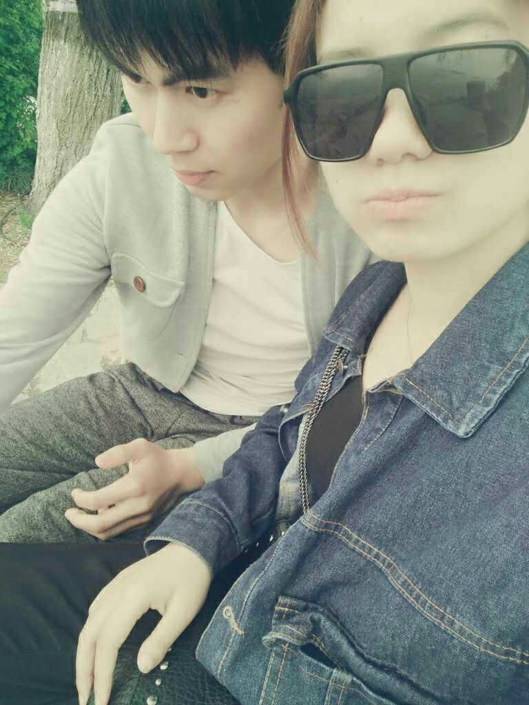
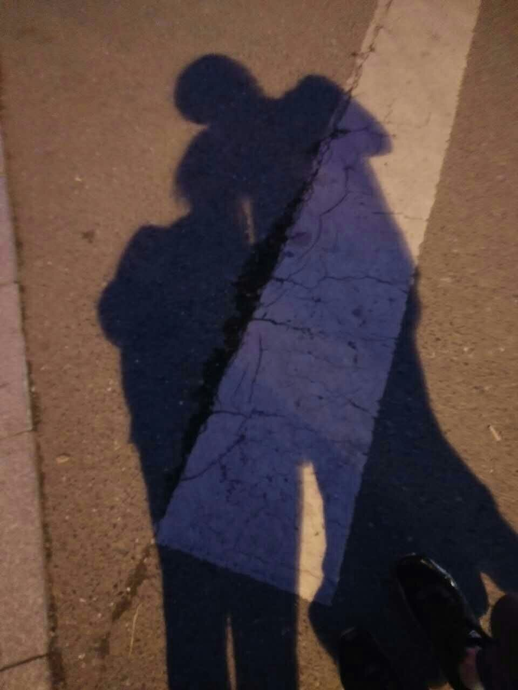

写给宝贝的情书
2016.4.15，现在是22点58分，我坐在床上，给你写这封信，当然你也可以理解是情书，一封写给我最爱的宝贝的情书。好像这是我大学写的一封信，也会是最后一封，很庆幸，大学四年唯一的一封就是给你的情书。
2012年的6月，我们相遇，我知道那就是缘分，第一次见你，你扎着马尾辫，骑着自行车，我承认当时多看你一眼，毕竟我还是对村花很好奇的，哈哈 哈，然而当时没有戴眼镜，只能看个大概，心里嘀咕着好像还可以，当时我没有想过，我们还可以见面，然后就是晚上一起散步，一起买吃的，一起打牌，那个时 候，你说你把碎冰冰让给了我，那个时候，你以为我对别人有好感，然而我还是偷偷的多看了你一眼，回去之后，也不知道当时是什么勇气让我加了你，但是我可以 肯定是，你和我有缘分，我不想错过。然后，就是QQ、电话'骚扰'，让宝贝你渐渐的习惯了我。虽然期间还使了一些小手段，哈哈哈，但是，我就是做到了，还 记得那个时候，你晚上睡觉一定要我唱歌给你听，你才能睡去。最终于2012年8月10号11点30分，你成为了我的女朋友。
之后，你还是和以前一样很难得出来一次，但是我们的距离却变得更近了，然后就是8月底我入学了，刚刚入学的，对大学充满了好奇，有什么东西我们彼此 都会打电话，一个陌生的地方因为有彼此的陪伴才不那么孤单，然后就是入学后的第一次见面，那个10月1号，我们都回家了，你先到的华埠，我和同学因为堵车 很晚才到的开化，到华埠的时候已经是10点多了，那天你穿了一件红色的开衫，然后我们吃了性价比很高的红烧肉。之后见你，应该就是我亲自奔赴黄岩了，说实 话，那是我第一次一个人去一个陌生的城市，曾经的我连衢州都没有出过，说真的，一路上我感觉很迷茫，因为我不知道目的地在哪里，当然你是我前进的动力，一 下车，一股陌生感就袭来，都不知道应该往哪里走，打了车 见到了你，我心里才踏实，久而久之，对黄岩我也渐渐熟悉起来了，从大一到大三我去过很多次黄岩，在黄岩我有太多的经历，唱歌、电影、划船、逛公园、爬山、 过山车、采草莓、骑双人车、陪你上课，陪你去温岭、陪你去路桥、一起打排球、吃烧烤、逛夜市、湖南兄弟、江西菜馆、还有那么多的酒店，是你，让我熟悉了一 个城市，是你，让我爱上了一个城市，有你的地方，我总是那么习惯。
去年，在你即将毕业的时候，你来了杭州，来到了一个陌生的城市，曾经你就说过，你总感觉杭州有东西在等你，我想，那就是我。现在，我即将毕业了，我 也明白，当初我妈为什么要把我留在杭州了，因为有个人会来杭州找我，那个人就是你。 从相识，想知，到相爱，我们走过了一千多个日夜，我很庆幸大学这四年，你一直在我的身边，陪着我，爱着我，你让我学会了很多，曾经的我不敢想象我们的以 后，而现在，我知道，你比我想象的要重要的多，虽然我知道未来的路不一定平坦，无论是工作还是生活，都会遇到很多想象不到的问题，但是只要你在我身边，我 就什么都不怕，就像以前去一个陌生的城市一样，只要想到你，我就有走下去的勇气。
从我重新戴上红绳的那一刻，我就认定是你是我的女人了，不再是像以前一样是女朋友，而是我张建的女人， 这一辈子的女人，过去的一年，我让宝贝承认的太多，不就之后我也将正式的踏入社会，以后的日子，请让我们一起努力，一起奋斗，当然我得更努力，因为我是我家宝贝的男人。 这里应该有音乐：“我会变成童话里，你爱的那个天使，张开双手变成翅膀守护你”
最后呢，我当然是要祝我的宝贝，生日快乐，开开心心， I LOVE YOU FOREVER 。木马！
老变态
